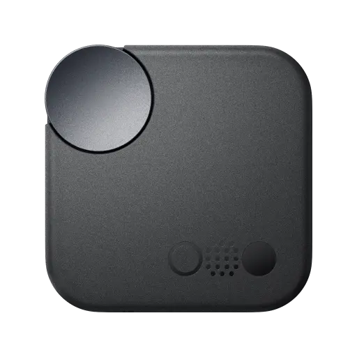

Dashboard
Real-time connection monitoring for CMF Buds 2a
Connected
Playback
Disconnected
Earbuds are not detected
CONNECTION TIME
00:00:00
PLAYBACK TIME
00:00:00
Now Playing
Nothing playing
right now
Session Quick Facts
Connect your earbuds to see live session insights
here.
Estimated Time Left
—
Daily Goal Progress
0h 0m / 3h
Battery
Real-time level monitoring and status diagnostics
BUDS 2a
Disconnected
L
—

C
—
R
—
Battery Analytics
Historical drain tracking and patterns
No battery log data found for this range.
Statistics
Historical and current interval statistics
Daily Activity
Last 7 days
Today
Connection time—
Playback time—
This Week
Connection time—
Playback time—
This Month
Connection time—
Playback time—
Lifetime
Connection time—
Playback time—
Session History
Browse recent audio and connection intervals
| Start Time | End Time | Connected | Playback | Battery (Start → End) |
|---|
Session Breakdown
Detailed per-session audio usage analysis
Select a session to view its breakdown
Settings
Configure preferences and manage data
Daily Playback Goal
Set your target daily playback time (in hours), up to 12 hours. Days that meet this
target count toward your streak.
Target Earbuds Name
Select from paired devices or specify a custom one.
Desktop Notifications
Show notification on connection/disconnection events.
Enable on Startup
Launch Nox automatically when you sign in to Windows. Manageable from Task Manager →
Startup Apps.
Battery Polling Interval
How often the app queries battery levels from the earbuds.
Font Style
Default keeps the current font theme. NDot applies the Nothing-style font where it
fits.
Battery Drain Interval
Matches the step size of earbud battery reporting (e.g. 5% jumps for CMF Buds 2a).
Earbud Query Log
View recent battery queries sent to the earbuds in a popup.
Import / Export Data
Back up or restore everything: sessions, history, logs, app audio events, and
settings.
Reset All Data
Permanently wipe all session history and statistics. Requires Windows password
confirmation. This cannot be undone.
About Nox
Version … — Rust + Tauri (WebView2)
Tracks Bluetooth connection state and audio playback times.
Data stored in
Tracks Bluetooth connection state and audio playback times.
Data stored in
%APPDATA%\EarbudsTracker\tracker.db for compatibility.